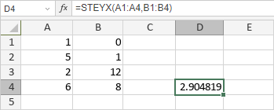

STEYX Funkcija
STEYX funkcija je jedna od statističkih funkcija. Koristi se za vraćanje standardne greške predviđene vrednosti y za svaki x na regresionoj liniji.
Sintaksa
STEYX(known_y's, known_x's)
STEYX funkcija ima sledeće argumente:
| Argument | Opis |
|---|---|
| known_y's | Niz zavisnih promenljivih. |
| known_x's | Niz nezavisnih promenljivih sa istim brojem elemenata kao što sadrži known_y's. |
Napomene
Prazne ćelije, logičke vrednosti, tekst ili vrednosti greške koje se unesu kao deo niza se ignorišu. Ako se unesu direktno u funkciju, tekstualne reprezentacije brojeva i logičke vrednosti se tumače kao brojevi.
known_y's i known_x's moraju sadržati isti broj podataka, u suprotnom funkcija vraća vrednost greške #N/A.
Kako primeniti STEYX funkciju.
Primeri
Slika ispod prikazuje rezultat koji vraća STEYX funkcija.
